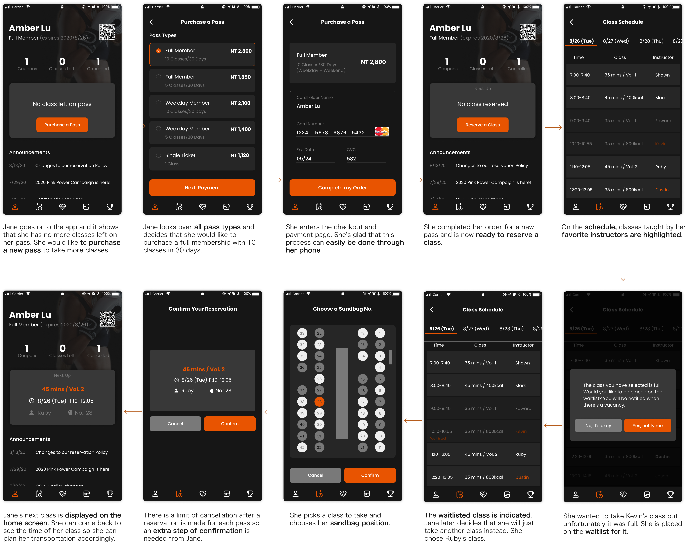
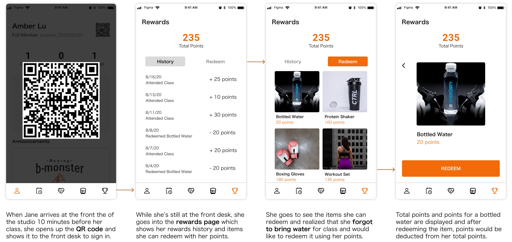
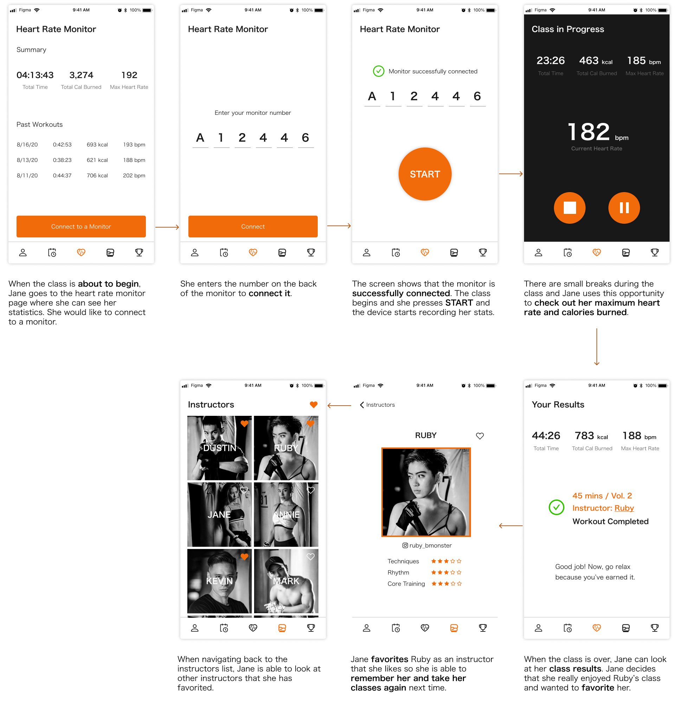

Starting Off
I started going to boxing cardio studio with my friends. The classes and facilities are great, but I noticed a bottleneck in it's user journey. When checking in for the class, customers are looking for the class reservation confirmation email that is in the midst of the countless emails received each day. I decided to look into its service process, information flow and here I am designing an app that not only solves the problem but also streamlines the whole process!
Understanding the Problems
1. Finding the QR code for checking in
Users receive a confirmation email after they have successfully reserved a class. The email contains the class details and a QR code for checking in at the front desk. We receive multiple dozens of emails a day so it's stressful and inconvenient for the users to have to find a confirmation email that was sent 2 or 3 days ago or even longer.

Most of my emails are in English instead of Chinese so the confirmation email is a bit easier to spot. Imagine needing to find this email in a midst of emails all in Chinese. Of course people would be stressed!
Why do users get stressed out by this? It's just like the slight stress you get when you're getting your credit card to pay for something but it's stuck in your wallet and everyone is waiting. It's a common thing people feel - being unprepared or not ready when it's your turn. Solving this problem would enhance the user experience.
2. Website vs App
B Monster has a website that every user has to access in order to reserve classes and perform other membership realted issues. They also have a mobile application but the main feature for that is to connect to the heart rate monitor which they offer to track heart rate and calories burned.

I found that they have completely different features available. The lack of connection between the 2 platforms affects the user experience and how connected users feel to the whole brand. Also, their website isn't very user-centric but users have to frequently visit the website to perform a lot of tasks such as purchase pass, reserve class, enroll in waitlists, etc.
User Research + Pain Points
I collected data through in-person interviews with B-Monster customers including my friends and people I met through classes. Here are the results:
1. "Forgetfullness" due to the website's information structure being unclear.
Users often forget how many classes are left on their pass and how to reserve classes. There should be a place for current members to accomplish all of their goals and a good user flow so users can rely on recognition instead of recall.
2. Website isn't mobile-friendly
Many users try to reserve for the next class right after their current one is over which usually happens right after they leave the studio when they don't have access to their laptop. Going on to their website through their phones is very inconvenient.
3. Users who don't use the app aren't aware of the features exclusively on the app.
It was until I downloaded the app for research purposes that I realized it had a rewards system which most members are not aware of.
4. Too many instructors for members to remember.
Some users would like to take their favorite instructors classes but it's not easy to try and remember their names so users have a hard time trying to reserve classes taught by their favorite instructors.
User Personas

Design Objective
My solution is to create a mobile application that allows B Monster members to perform all necessary tasks seamlessly and effortlessly to improve the overall user experience and service flow.
1. To provide an efficient way for members to check in for their classes.
2. To improve the user journey of reserving a class.
3. To incorporate all necessary membership-related functions.
Features
Since different features were put on different platforms, I created a table for me to sort out which features are necessary on which platform.

User Flow Design
I created a map of its current service map and identified a few problem areas. I then went on the sketch out some possible user flow ideas that could improve the experience of the problem areas.
Solution
Experience with purchasing pass and reserving classes
As users open the app, on the home screen they can easily see their membership information, including number of classes left on their pass and their next reserved class if they had reserved one, or if they could go reserve a class or that all classes are used up. This was one of the problems that I intended to solve: allowing users to easily see their membership information.

Experience with checking in at the front desk
When users check in at the front desk, they don't have to struggle to try and find the confirmation email anymore, the QR code is on the home screen and they can just present that to the front desk. Users can also easily redeem their rewards at the front desk.

Experience with using the heart rate monitor
This design also covers the experience during and after the class. The statistics dashboard allows users to clearly see their progress and their able to favorite the instructor of which they took their class from. The class type and confirmation of completion is shown as well for users to feel a sense of accomplishment.

Takeaways
1. Don't forget that the interface exists outside the screen boundaires
When I was designing, I constantly find myself trying to fit everything in the screen boundaries which creates clutterd and chaotic designs. For me, it's important to keep in mind that users are scrolling around the app, they expect to find overflowing content outside of the screen boundaries. This creates opportunities for me to design micro interactions that brings users more joy.
2. Recognize that a design is never finished
More than often, I fixate on finding multiple solutions to a problem and trying to decide on which one is best. When I finally decide on one, the next day, I change my mind again. Because of this constant change, I find that I spend a lot of time on one small problem and not confident about my decisions. I think it's important to recognize that a design is never finished, there's always multiple solutions to a problem and more problems to be solved. That's why iterations and updates are important!
Next Steps
1. Since this app is designed for a business that actually exists, I would love to get in touch with the business and discuss how my research and design could help them solve their business problems.
2. I would also love to explore the idea of a widget. Having a widget that contains the QR code could further improve the user experience. But, more research is needed.
3. As mentioned previously, the website has very unorganized information. I could also expand this case study and redesign its website as well.